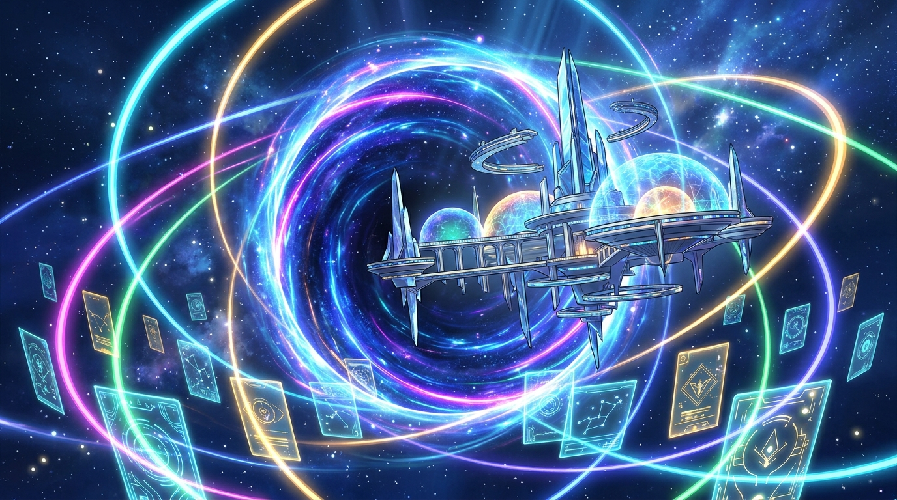
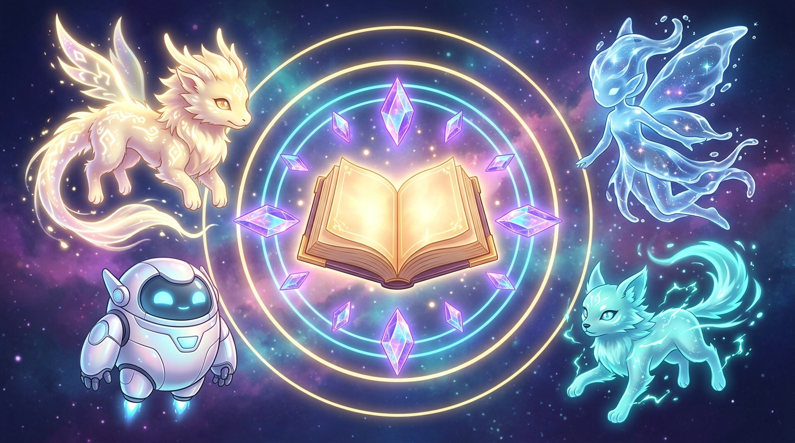

鷹架導向遊戲認知設計
依據嚴謹的遊戲心理學與認知心理學打造，透過時空穿梭籌備期、戰寵階層式鷹架提示、知識卡迴紋針外部檢索與即時解答剖析，讓學習者在沉浸式挑戰中自然跨越閱讀障礙，精準對應國中會考與高中學測的情境素養題組。
- 限時節奏激發專注力，擺脫傳統紙本刷題的枯燥感。
- 戰寵提供關鍵字、整體與答案區三層鷹架，循序引導獨立思考。
- 結合個人學習紀錄與因材網數據，隨時掌握各科素養成長曲線。
讓你蛻變為情境素養題閱讀理解高手！化身時空學園招募的「天選之人」，駕馭國語、英語、數學、自然、社會與跨領域知識卡，攜手時空導師與進化戰寵穿越古今戰場，擊退破壞時空秩序的宇宙魔王，挑戰成為全國素養知識王！

《時空學園》由國立臺灣科技大學迷你教育遊戲研究團隊（NTUSTMEG，侯惠澤特聘教授主持）研發，教育部資訊及科技教育司與教育部因材網指導推動，將長篇情境素養題轉化為熱血刺激的策略解題對決。
依據嚴謹的遊戲心理學與認知心理學打造，透過時空穿梭籌備期、戰寵階層式鷹架提示、知識卡迴紋針外部檢索與即時解答剖析，讓學習者在沉浸式挑戰中自然跨越閱讀障礙，精準對應國中會考與高中學測的情境素養題組。
無需下載龐大安裝檔，只要透過瀏覽器造訪官方平臺即可跨裝置暢玩。無論是課堂教學互動、同校好友組隊競賽，或是社會大眾自我挑戰，都能找到最適合的學習節奏。
在 60 秒戰鬥時限內迅速掌握長文主旨與核心情境。
從文本線索與知識卡庫中精準鎖定關鍵證據。
去蕪存菁，歸納多段跨科資訊並過濾干擾選項。
串聯因果關係、時序變化與科學原理完成高階推理。
在組隊協作與陣營對決中分工查證、討論戰術。
神祕機構「時空學園」緊急招募擁有知識潛能的「天選之人」，搭乘時空飛梭穿梭各大歷史與現代時空，與時空導師、進化戰寵並肩對抗企圖掠奪能量的宇宙魔王！
每位時空導師皆代表特定學科領域，當任務題目包含該導師的所屬科目時，其強力被動與戰隊加成技能就會自動觸發！在多人協作模式下，多位符合科目的導師技能更能互相疊加，發揮驚人戰力。
若本次任務科目包含「英語」，全戰隊防禦力大幅增加 100 點（最低僅受 85 點傷害），並且在戰鬥結算時額外獲得 10% 能量！
導師等級提升後會陸續解鎖涵蓋攻防輔助與資源增幅的七大核心能力：
時空導師採取自動升級機制，出戰累積經驗即可解鎖新技能；在「時空穿梭」籌備期點擊知識卡上的外部「迴紋針連結」，更能額外賺取導師經驗！此外，導師等級會影響抽到的題目難度（僅教師帳號可於設定中自由調整，學生帳號則依學校年級自動綁定）；個人頁面亦提供專屬 AI 導師，還能自由更換背景與穿著！
原始帳號即內建 3 隻教育部戰寵，其餘戰寵可透過能量購買、參與活動或系統贈送取得！每場戰鬥最多攜帶 3 隻戰寵出擊（每隻每場限用 1 次，新手建議優先攜帶關鍵字提示戰寵），部分跨團隊合作聯名戰寵更可直接連結至其他教育遊戲頁面！

技能「思思寶藏」：當任務科目包含全科時發動，一口氣開啟本題文本內所有關鍵字提示，迅速鎖定作答核心。
技能「文化吱吱」：直接開啟 1 個答案區提示，在卡關或時間緊迫時精準指點迷津。
技能「好詩快讚」：個性急性子、擅長光速傳播資訊！科目含國語時開啟所有文本關鍵字＋1 個整體提示。
包含水滴、可可、e度、幼角獸等豐富戰寵，透過閱讀知識卡累積知識書與能量即可解鎖並三階進化！
活動限定登場的極稀有頂級強敵，擁有毀天滅地的壓迫感與最豐厚的討伐榮耀。
統御各大時空裂縫的高階首領，考驗戰士跨科整合與長篇閱讀推論的真功夫。
鎮守區域戰役的精銳指揮官，適合檢驗單科與跨單元素養知識的熟練度。
潛入各時代蒐集能量的前線部隊，是新手戰士熟悉卡牌拖曳與出擊節奏的最佳對手。
所有曾經遭遇並成功擊退的強敵都會永久記錄於個人頁面的「魔王戰史」中，遊戲中更有極具臨場震撼感的動態魔王等你挑戰，並累積全國討伐紀錄：
點擊下方任意知識卡類型查看戰術用途！個人「知識卡庫」支援依科目與 10 種卡片類型下拉篩選，並貼心標示「是否使用過」，讓你邊查資料邊累積養成資源。
切換下方五大分頁，一次掌握登入與大廳功能、單人冒險 6 步驟與回收彩蛋、多人協作、陣營對戰與黑洞油料系統！
專為 1–12 年級在學師生設計，由官網點選【馬上進入遊戲】→【由因材網登入遊戲】，使用各縣市教育雲 OpenID 自動對應學校與班級，直通校際排行榜！
適合社會大眾或一般體驗玩家，建議使用 Google 帳號（亦支援 Facebook、LINE、Apple ID）；首次登入須至信箱接收 6 位數 OTP 驗證碼並於 5 分鐘內輸入完成。
點選【因材網-一般帳號登入】，依序選擇縣市與學校並輸入帳號密碼（學生將直接進入，教師帳號另有專屬選項），完整串接因材網學習紀錄與油料題庫。
遊戲大廳將所有核心模式統一整合至首頁——紅色「單人」、橘色「多人」、綠色「星球限時活動」與藍色「黑洞任務」，並提供五大快捷中樞：
初次登入建立的戰士暱稱僅能設定一次，日後無法更改！於設定選單中可自由開關注音顯示、微調字體／音樂／音效與畫質；其中「導師等級」會影響抽到的題目難度，僅教師帳號可自由調整，學生帳號將依學校年級自動綁定。
點選紅色「單人」選擇臺灣／世界主題（隨機 2 關擇一），或直接在首頁以關卡碼／名稱、年級與主要學科篩選，更支援平板掃描 QR Code 或圖片導入直達指定關卡！
多數題目以 4 張同類為一組、共 12 張卡（其中 3 張正解）！於籌備期觀察手牌推測科目、點迴紋針賺經驗，選好對應導師與戰寵（新手首推關鍵字提示戰寵）後按【準備完成】。
題目播放後可上下滾動完整閱讀，並透過左右箭頭瀏覽所有知識卡，將正解拖曳至答案格按下【出擊】（每回合限時 60 秒，倒數結束將強制出擊）。
不論在題目一開始或答錯後，皆可發動戰寵技能（每隻每場限 1 次），即時取得文本關鍵字高亮、整體方向或答案區知識卡提示，搭配正確科目導師更能大幅強化攻防。
答對即痛擊魔王！答錯時有機會觸發「回收機制」——連續長按星星 即可賺取額外積分、能量與 AI 晶片！每題作答完畢提供完整詳解（須等待 10 秒後接續下一題）。
通關後詳細統計獲得積分、能量、戰鬥用時、攻擊正確率與導師經驗值，同步推進各項璀璨成就、每日新手任務並更新魔王戰史！
點選大廳橘色「多人」進入組隊冒險！可自行建立房間【複製房間碼】邀請好友，或直接接受他人協作邀請加入。協作模式支援指定關卡碼或隨機抽題，且平均獲得積分高於單人模式！
協作戰鬥考驗隊友間的默契與資源分配，精準掌握以下規則即可戰無不勝：
支援 2V2、3V3、4V4 雙隊對決，僅限隨機抽題對戰以確保競技公平！雙方挑戰完全相同的題目組合（約 5 至 15 題、總時限如 900 秒），畫面上方即時顯示推進進度條！
| 己方相較敵方人數差 | 勝方積分倍率 | 敗方積分倍率 |
|---|---|---|
| 少 2 人（以寡擊眾） | 130% | 115% |
| 少 1 人（逆風作戰） | 125% | 110% |
| 人數相等／多 1–2 人 | 120% | 105% |
點選大廳藍色「黑洞」進入沉浸式劇情副本，先閱讀故事劇情再銜接冒險答題（須具備足夠油料方可挑戰）：
進行黑洞情境闖關時若油料不足，只要點選【補充】→【開始】即可展開結合因材網題庫的趣味加油挑戰！
從個人全方位管理頁面、期間限定星球活動與排行榜，到黑洞情境任務、因材網油料補充、QR Code 掃描與動態魔王，打造源源不絕的探索動力！
一站式管理你的戰績、每日新手任務、AI 導師換裝、圖鑑收藏與活動獎勵紀錄：
透過大廳排行榜即時查詢各校師生與全國玩家最新名次，系統並支援國小、國中、高中分齡榜與校際排行。
此外，點選大廳綠色按鈕即可進入期間限定「星球活動」，挑戰不定期更新的多元學科主題星球與專屬星球排行榜，上榜者更將不定時獲得官方發放的豐厚獎勵！
達成條件後，記得在成就頁面主動點選已達成項目，即可立即領取豐厚積分與能量獎勵！
首次於單一回合內完美通關 4 格正確知識卡，展現精準直覺。
單回合連續答對 5 格知識卡，化為疾風驟雨般的致命攻勢。
挑戰超高難度 6 格全對一回合通關，實力與氣勢兼具。
不斷收服與培育四大種族時空戰寵，壯大你的專屬支援陣容。
運用知識書與能量完成戰寵多階段進化，解鎖終極型態與技能。
累計擊退破壞時空秩序的宇宙魔王，另有「機械族的剋星 I」、「新手冒險者」等豐富里程碑。
收錄「遊臺灣」3 章議題式黑洞情境任務（可重複挑戰）與黑洞背包！油料不足時可進行嫁接因材網題庫的拖曳油槍補油任務，全對即可滿油續航。
四大模式全面整合至大廳首頁，支援以關卡碼／名稱、年級與主要學科快速篩選，更支援平板相機掃描 QR Code 或圖片導入一秒開戰！
挑戰期間限定星球活動與「臺灣行腳、小倫遊臺灣、霞海情緣、鐵流」等在地主題關卡，迎戰極具震撼力的動態魔王並角逐星球榜限定獎品！
個人頁面可替 AI 導師更換背景與穿著；亦支援教師結合 AI 協作高效率生成情境關卡，一鍵產出專屬關卡碼與 QR Code帶入課堂即時互動！
由 快樂鯉魚秋老虎 專為《時空學園》教學推廣與教師命題實戰開發的一站式免費線上工具群，涵蓋遊戲平臺模擬體驗、命題架構引導、AI 諮詢指引與圖卡剪裁，助你從體驗到命題全面升級！
無需登入帳號即可在瀏覽器中快速模擬《時空學園》遊戲平臺介面與操作流程，適合教師於課堂進行教學演示、研習活動現場示範，或讓初次接觸的玩家於開戰前先熟悉解題節奏。
循序漸進引導教師拆解《時空學園》情境素養題的核心結構，從主題發想、長文情境撰寫到知識卡與選項設計，系統化完成高品質關卡命題。
專為《時空學園》命題打造的互動式 AI 諮詢助手，即時解答命題規格、十大知識卡分類原則、戰寵鷹架提示撰寫與審題要點等各類疑問。
整合實戰級 AI 命題步驟與提示詞策略，協助教師結合生成式 AI 高效率產出符合《時空學園》規範的跨領域情境素養題組與詳解。
專為《時空學園》知識卡與關卡視覺素材設計的線上剪裁工具，一鍵對齊標準圖卡比例並快速匯出，大幅縮短命題配圖的後製時間。
掌握開放時段、登入網址與聯繫窗口，立即號召同學好友一同踏上時空素養大冒險！
每日 07:00 – 22:00 穩定開放，課堂教學、課後自主練習與假日好友組隊皆可暢玩。
可於大廳設定開啟注音顯示，並自由調整文字大小、背景音樂、戰鬥音效與畫質；教師帳號更可調整「導師等級」來切換抽題難度（學生依學校年級自動綁定）。
立即前往官方平臺體驗遊戲、下載教學命題資源，或聯繫研發團隊：
 可自由拖曳
可自由拖曳